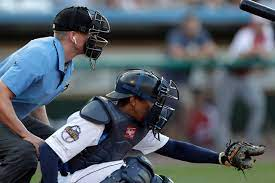

Rules of Baseball
최근 야구가 주는 매력에 흠뻑 빠진 이들이 적지 않다. 그러나 야구 규칙은 초보 야구팬이 넘기에는 쉽지 않은 장벽이다. 물론 야구 규칙을 잘 몰라도 야구를 즐기는 데 큰 무리는 없다. 하지만 아는 만큼 더 많은 것을 보게 되는 것이 자연의 이치다. 조종규 KBO 심판위원장은 “야구 규칙은 아주 상식적이다. 상식적으로 생각하면 그렇게 어렵지 않다”고 밝혔다. 어느 스포츠나 그렇지만 규칙은 누구나 공감할 수 있는 판단의 결정체다. 그런데도 야구 규칙이 어렵다는 볼멘소리가 적지 않다. 그 이유는 여러 가지가 있겠지만 심판 재량의 범위가 크기 때문이다. 왜 심판의 자율성이 큰 것일까?
“야구에서 일어나는 모든 사항을 명문화한다면 그것은 인간이 할 수 있는 영역이 아니다. 기계가 해야 한다. 그리고 미국은 규칙집이 아주 간단하다. 반면 우리나라와 일본은 원주나 부기 등을 통해 이런 플레이가 있을 때는 어떻게 판정한다는 식으로 세분돼 있다. 각각의 장단점이 있지만 어느 쪽이나 심판의 자율성을 존중하는 것은 같다.” 프로야구 최초로 2,000경기에 출장한 명판관 이규석 대한야구협회 경기이사의 얘기다.
사실 우리가 당연하게 여기는 각종 야구 규칙은 어느 날 갑자기 하늘에서 뚝 떨어진 것이 아니다. 오랜 세월에 걸쳐 시행착오를 거듭하며 때로는 새로운 규칙이 생기고 때로는 기존 규칙이 폐지되며 정리돼 온 것이다. 즉 야구 규칙은 역사적 산물이며 앞으로도 개정 또는 변경될 소지가 크다는 의미다. 조 심판위원장은 “(야구 규칙이) 개정 또는 변경되더라도 뜬공을 바로 잡으면 아웃 되고 원바운드로 잡으면 아웃이 되지 않는 것과 같은 기본 원리는 변하지 않는다”며 “가능한 수비와 공격이 균형을 갖추며 공정성을 보장하는 게 대전제”라고 강조했다.